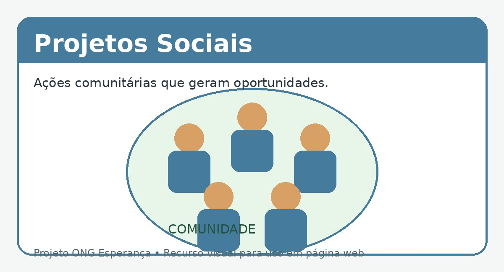

Campanha de alimentos
Arrecadamos alimentos para montar cestas básicas destinadas às famílias atendidas pela organização.

A ONG Esperança desenvolve projetos sociais voltados para pessoas e comunidades em situação de vulnerabilidade. As iniciativas são realizadas com o apoio de voluntários e doadores.
Arrecadamos alimentos para montar cestas básicas destinadas às famílias atendidas pela organização.
Reunimos materiais escolares para auxiliar crianças e adolescentes em suas atividades educacionais.
Os voluntários podem participar de atividades comunitárias, auxiliando na organização e realização das ações sociais.
Voluntários também podem colaborar com atividades educativas e de apoio às crianças e adolescentes.
Existem diferentes formas de contribuir com o trabalho da ONG Esperança.